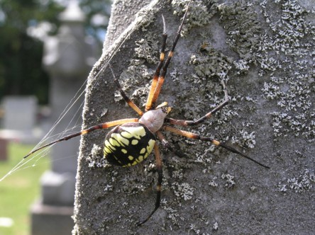
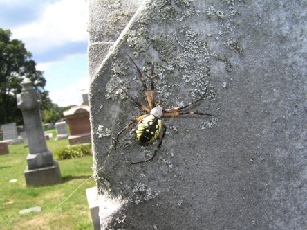

|
Click on any of the titles in the option box below to view the photo:
Fairview Church Cemetery is located off Risch Road, on the south side of US-33 outside Enterprise, Ohio (Good Hope Township, Hocking County). The coordinates are 39° 33' 33.12" N, 82° 30' 5.23" W.
Fairview Church Cemetery is still active, part of the cemetery is also used as a Memorial Garden. The oldest gravestones are located closest to the church. The cemetery is very well taken care of, but quite a few of the older gravestones have been damaged over the years.
There are no stories about this cemetery being haunted, but I did have a scary experience when I visited in September 2005. I almost walked into a HUGE spider while it was working on it's web! Ghosts I can handle, but spiders are a totally different story! :) Here are a couple photos of the garden spider:


Where do you want to go? Select your destination:
|